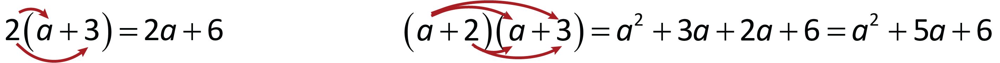
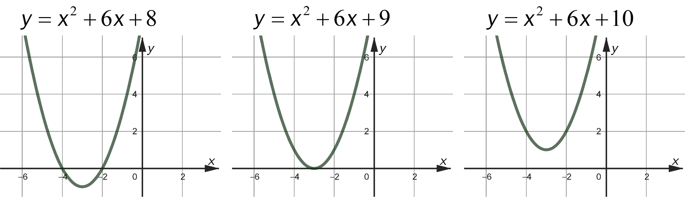

Faktorisering, likninger og identiteter
Du skal ha kompetanse om
- faktorisering og forkorting
- multiplikasjon av parenteser
- faktorisering ved å trekke ut fellesfaktorer
- kvadratsetningene
- faktorisering av andregradsuttrykk
- abc-formelen
- forkorting av brøkuttrykk
- identiteter
- andregradslikninger
Faktorisering og forkorting
Multiplikasjon av parenteser

Faktorisering ved å trekke ut fellesfaktorer
Eksempel
Faktoriser uttrykket \( 2x + 6 \).
Vi ser at \(2\) er en fellesfaktor i begge leddene.
\[ 2x + 6 = 2\cdot x + 2 \cdot 3 = 2(x + 3) \]
Eksempel
Faktoriser uttrykket \( 2x^2 + 6x \).
Vi ser at \(2x\) er en fellesfaktor i begge leddene.
\[ 2x^2 + 6x = 2x\cdot x + 2x \cdot 3 = 2x(x + 3) \]
Kvadratsetningene
$$ \begin{aligned} \left( x + y \right)^2 &= x^2 + 2xy + y^2 \\ \left( x - y \right)^2 &= x^2 - 2xy + y^2 \\ \left( x + y \right)\left( x - y \right) &= x^2 - y^2 \end{aligned} $$ Fullstendig kvadrat: Andregradsuttrykk som kan faktoriseres til \(\left(x \pm y\right)^2\).
Merk: Begrepet "andregradsuttrykk" kommer av at \(x\)'en er opphøyd i 2.
Eksempel
Bestem \(b\) slik at uttrykket \( x^2 + bx + 16 \) blir et fullstendig kvadrat.
Det første leddet \(x^2\) og det siste leddet \(16 = 4^2\) gir
\[ \left( x + 4 \right)^2 = x^2 + 8x + 16 \text{ eller } \left( x - 4 \right)^2 = x^2 - 8x + 16 \]
Altså er \(b=8\) eller \(b = -8\).
Merk: Oppgaver med andregradsuttrykk har ofte, men ikke alltid, to løsninger, slik som i eksempelet over.
Eksempel
Bestem \(c\) slik at uttrykket \( x^2 + 6x + c \) blir et fullstendig kvadrat.
Det første leddet \(x^2\) og det midterste leddet \(6 = 2\cdot 3\) gir
\[ \left( x + 3 \right)^2 = x^2 + 6x + 9 \]
Altså er \(c = 9\).
Faktorisering av andregradsuttrykk
Hvis et andregradsuttrykk er et fullstendig kvadrat kan vi faktorisere det ved hjelp av kvadratsetningene.Eksempel
Faktoriser \(x^2 - 25\).
Fra kvadratsetningene ser vi at
\[ x^2 - 25 = (x + 5)(x - 5) \]
Eksempel
Faktoriser \(x^2 - 5\).
Fra kvadratsetningene ser vi at
\[ x^2 - 5 = (x + \sqrt{5})(x - \sqrt{5}) \]
Eksempel
Faktoriser \(x^2 + 10x + 25\).
Fra kvadratsetningene ser vi at
\[ x^2 + 10x + 25 = (x + 5)(x + 5) \]
Eksempel
Faktoriser \(x^2 - 10x + 25\).
Fra kvadratsetningene ser vi at
\[ x^2 - 10x + 25 = (x - 5)(x - 5) \]
Eksempel
Faktoriser \(x^2 + 5x + 6\) og sett prøve på svaret.
Vi ser at \(2 \cdot 3 = 6\) og \(2 + 3 = 6\), altså er
\[ x^2 + 5x + 6 = (x + 2)(x + 3) \]
Prøve på svaret (ganger ut parentesene):
\[ (x + 2)(x + 3) = x \cdot x + x \cdot 3 + 2 \cdot x + 2 \cdot 3 = x^2 + 5x + 6 \]
Eksempel
Faktoriser \(x^2 + x - 6\).
Vi ser at \(-2 \cdot 3 = -6\) og \(-2 + 3 = 1\), altså er
\[ x^2 + x - 6 = (x - 2)(x + 3) \]
Eksempel
Faktoriser \(x^2 - x - 6\).
Vi ser at \(2 \cdot (-3) = -6\) og \(2 + (-3) = -1\), altså er
\[ x^2 - x - 6 = (x + 2)(x - 3) \]
Eksempel
Faktoriser \(x^2 - x - 6\).
Vi bruker \(a = 1\), \(b= -1\) og \(c = -6\). Det gir
$$
\begin{align}
x_1 &= \frac{-(-1) + \sqrt{(-1)^2 - 4\cdot 1 \cdot (-6)}}{2} = \frac{1 + 5}{2} = 3\\
x_2 &= \frac{-(-1) - \sqrt{(-1)^2 - 4\cdot 1 \cdot (-6)}}{2} = \frac{1 - 5}{2} = -2
\end{align}
$$
Dermed kan vi faktorisere uttrykket slik:
\[ x^2 - x - 6 = (x - 3)(x + 2) \]
Merk: Det mye jobb å bruke abc-formelen, og det er ofte unødvendig (som i eksempelet over; her kan vi enkelt bruke heltallsmetoden).
Men noen ganger må vi bruke abc-formelen, og det er en rett-fram-metode, som alltid fungerer.
Eksempel
Faktoriser \(x^2 - 3x - 5\).
Vi bruker \(a = 1\), \(b= -3\) og \(c = -5\). Det gir
$$
\begin{align}
x_1 &= \frac{-(-3) + \sqrt{(-3)^2 - 4\cdot 1 \cdot (-5)}}{2} = \frac{3 + \sqrt{29}}{2}\\
x_2 &= \frac{-(-3) - \sqrt{(-3)^2 - 4\cdot 1 \cdot (-5)}}{2} = \frac{3 - \sqrt{29}}{2}
\end{align}
$$
Dermed kan vi faktorisere uttrykket slik:
\[ x^2 - 3x - 5 = \left(x - \frac{3 + \sqrt{29}}{2}\right)\left(x - \frac{3 - \sqrt{29}}{2}\right) \]
Merk: Når vi løser oppgaver uten hjelpemidler er det meningen å svare uten desimaltall, sånn som i eksempelet over.
Svaret er litt "stygt"/komplisert, men hvis man kan metoden med abc-formelen er det like enkelt å løse det forrige eksempelet som eksempelet foran (som hadde et penere svar).
Forkorting av brøkuttrykk
Når vi skal forkorte brøker, må vi først faktorisere, før vi forkorter fellesfaktorer (som kan være en hel parentes).Eksempel
\[ \frac{x^2 + 5x + 6}{x + 2} \]Skriv uttrykket så pent som mulig.
\[ \frac{x^2 + 5x + 6}{x+2} = \frac{(x+3)(x+2)}{x+2} = x+3 \]
Eksempel
\[ \frac{x + 2}{x^2 + 5x + 6} \]Skriv uttrykket så pent som mulig.
\[ \frac{x+2}{x^2 + 5x + 6} = \frac{x+2}{(x+3)(x+2)} = \frac{1}{x+3} \]
Eksempel
\[ \frac{3}{x^2 + x - 2} + \frac{1}{x + 2} \]Skriv uttrykket så pent som mulig.
$$
\begin{align}
\frac{3}{x^2 + x - 2} + \frac{1}{x + 2} &= \frac{3}{(x-1)(x+2)} + \frac{1}{x + 2}\\
&= \frac{3}{(x-1)(x+2)} + \frac{1 \cdot (x - 1)}{(x-1)(x+2)} \\
&= \frac{3 + x - 1}{(x-1)(x+2)} \\
&= \frac{x + 2}{(x-1)(x+2)}\\
&= \frac{1}{x-1}
\end{align}
$$
Eksempel
\[ \frac{3x-12}{x^2 - 5x + 6} - \frac{6}{x-2} \]Skriv uttrykket så pent som mulig.
$$
\begin{align}
\frac{3x-12}{x^2 - 5x + 6} - \frac{6}{x-2} &= \frac{3x - 12}{(x - 2)(x-3)} - \frac{6}{x-2}\\
&= \frac{3x - 12}{(x - 2)(x-3)} - \frac{6x-18}{(x-2)(x-3)} \\
&= \frac{3x - 12 - (6x - 18)}{(x - 2)(x-3)}\\
&= \frac{-3x + 6}{(x - 2)(x-3)}\\
&= \frac{-3(x - 2)}{(x - 2)(x-3)} \\
&= \frac{-3}{x - 3}
\end{align}
$$
Identiteter
Identitet: Likning hvor høyre og venstre side er identiske.Eksempel
\[ x^2 + 5x + 6 = (x + 2)(x + 3) \]Er likningen en identitet?
Ja, for hvis vi ganger ut høyre side får vi venstre side.
Eksempel
\[ x^2 + 6x + 7 = (x + 2)(x + 3) \]Er likningen en identitet?
Nei, for hvis vi ganger ut høyre side får vi
\[ (x+2)(x+3) = x^2 + 5x + 6 \]
som ikke er identisk med venstre side.
Eksempel
Bestem \(b\) slik at likningen \( x^2 + bx + 16 = (x + 4)^2 \) blir en identitet.
\[ (x+4)^2 = x^2 + 8x + 16 \;\;\; \Rightarrow \;\;\; b = 8\]
Eksempel
Bestem \(b\) og \(c\) slik at likningen \( x^2 + 6x + c = (x + b)^2 \) blir en identitet.
Fra det midterste leddet på venstre side, \(6x\), ser vi at \(b=3\), som gir \(c = b^2 = 9\).
Andregradslikninger
Merk: Det er mange ulike strategier vi kan bruke for å løse andregradslikninger, men det finnes en metode som ALLTID kan brukes. Denne er vist helt nederst.
MEN! Alle strategiene er viktig å beherske, både for å løse andregradslikningene mest mulig effektivt, og fordi strategiene er viktig for å løse andre type likninger (f.eks. femtegradslikninger, som ikke har én metode som vi alltid kan bruke).
En likning på formen
\[ a(x - x_1)(x - x_2) = 0 \]
har løsningene \(x = x_1\) og \(x = x_2\).
MEN! Alle strategiene er viktig å beherske, både for å løse andregradslikningene mest mulig effektivt, og fordi strategiene er viktig for å løse andre type likninger (f.eks. femtegradslikninger, som ikke har én metode som vi alltid kan bruke).
Eksempel
Løs likningen \[ 2(x + 2)(x - 3) = 0 \] og sett prøve på svaret.
Løsningene er \(x = - 2 \) og \(x = 3\).
Prøve på svarene: $$ \begin{align} 2(-2 + 2)(-2 - 3) &= 2 \cdot 0 \cdot (-5) = 0 \\ 2(3 + 2)(3 - 3) &= 2 \cdot 5 \cdot 0 = 0 \end{align} $$
Prøve på svarene: $$ \begin{align} 2(-2 + 2)(-2 - 3) &= 2 \cdot 0 \cdot (-5) = 0 \\ 2(3 + 2)(3 - 3) &= 2 \cdot 5 \cdot 0 = 0 \end{align} $$
- få alt på venstre side av likhetstegnet
- faktoriser
- les av løsningene
Eksempel
Løs likningen \[ x^2 + 7x + 5 = 2x - 1 \]
$$
\begin{align}
x^2 + 7x + 5 &= 2x - 1 \\
x^2 + 5x + 6 &= 0 \\
(x + 2)(x + 3) &= 0
\end{align}
$$
Dermed er løsningene \(x = -2\) og \(x = - 3\).
Eksempel
Løs likningen \[ x^2 + 7x + 5 = 2x - 1 \]
$$
\begin{align}
x^2 + 7x + 5 &= 2x - 1 \\
x^2 + 5x + 6 &= 0
\end{align}
$$
Altså er \(a = 1\), \(b=5\) og \(c=6\), som gir løsningene
$$
\begin{align}
x &= \frac{-5 + \sqrt{5^2 - 4\cdot 1 \cdot 6}}{2} = \frac{-5 + 1}{2} = -2\\
x &= \frac{-5 - \sqrt{5^2 - 4\cdot 1 \cdot 6}}{2} = \frac{-5 - 1}{2} = -3
\end{align}
$$
Eksempel
Løs likningen \[ 3x^2 - x - 2 = 0 \]
Her er \(a = 3\), \(b=-1\) og \(c=-2\), som gir løsningene
$$
\begin{align}
x &= \frac{-(-1) + \sqrt{(-1)^2 - 4\cdot 3 \cdot (-2)}}{2 \cdot 3} = \frac{1 + 5}{6} = 1\\
x &= \frac{-(-1) - \sqrt{(-1)^2 - 4\cdot 3 \cdot (-2)}}{2 \cdot 3} = \frac{1 - 5}{6} = -\frac{2}{3}
\end{align}
$$
Eksempel
Løs likningen uten og med abc-formelen. \[ x^2 - 5 = 0 \]
Uten abc-formelen:
$$
\begin{align}
x^2 - 5 &= 0 \\
x^2 &= 5 \\
x &= \pm \sqrt{5}
\end{align}
$$
Uten abc-formelen: Vi bruker \(a = 1\), \(b=0\) og \(c=5\), som gir løsningene
$$
\begin{align}
x &= \frac{-0 + \sqrt{0^2 - 4\cdot 1 \cdot (-5)}}{2 \cdot 1} = \frac{\sqrt{20}}{2} = \frac{2\sqrt{5}}{2} = \sqrt{5}\\
x &= \frac{-0 - \sqrt{0^2 - 4\cdot1 \cdot (-5)}}{2 \cdot 1} = \frac{-\sqrt{20}}{2} = \frac{-2\sqrt{5}}{2} =-\sqrt{5}
\end{align}
$$
Merk: Vi kan alltid bruke abc-formelen, men det er noen ganger unødvendig tungvint.
Andregradslikninger har to, én eller ingen løsning
abc-formelen gir at \(ax^2 + bx + c = 0 \) har løsningene \[ x = \frac{-b + \sqrt{b^2 - 4ac}}{2a} \; \text{ og } \; x = \frac{-b - \sqrt{b^2 - 4ac}}{2a} \] Vi ser da at en andregradslikningen har- to løsninger hvis \(b^2 - 4ac > 0\)
- én løsninger hvis \(b^2 - 4ac = 0\)
- ingen løsninger hvis \(b^2 - 4ac < 0\)
Merk: Uttrykket \(b^2 - 4ac \) kalles diskriminanten. For å få bedre oversikt når vi løser andregradslikninger med abc-formelen, kan det
være lurt å regne ut diskriminanten først (og deretter sette inn tallet man får i kvadratrota i formelen).
Eksempel
For hvilke verdier av \(c\) har likningen \[ x^2 + 6x + c = 0 \] to løsninger, én løsning og ingen løsning.
To løsninger når
$$
\begin{align}
b^2 - 4ac &> 0 \\
36 - 4c &> 0 \\
-4c &> -36 \\
c &< 9
\end{align}
$$
Én løsning når
$$
\begin{align}
b^2 - 4ac &= 0 \\
36 - 4c &= 0 \\
c &= 9
\end{align}
$$
Ingen løsning når
$$
\begin{align}
b^2 - 4ac &< 0 \\
36 - 4c &< 0 \\
c &> 9
\end{align}
$$

Løsningen av likningen er skjæringen med \(x\)-aksen.Andregradslikninger med programmering
Med abc-formelen egner det seg veldig å bruke programmering for å løse andregradslikninger.En likning på formen \[ ax^2 + bx+ c = 0 \] kan alltid løses med dette programmet:
a = ... # Legg inn a-verdien
b = ... # Legg inn b-verdien
c = ... # Legg inn c-verdien
d = b**2 - 4*a*c
if d < 0:
print('Likningen har ingen løsning')
if d == 0:
x = -b/(2*a)
print(x)
if d > 0:
x = (-b + d**0.5)/(2*a)
print(x)
x = (-b - d**0.5)/(2*a)
print(x)
Merk: Algoritmen i programkoden er enkel å følge uten hjelpmidler også.
Eksempel
\[ 3x^2 + 4x + 1 = 0 \] Bruk algoritmen i programmet for å løse likningen.
\(a = 3 \)
\(b = 4 \)
\(c = 1 \)
\(d = 4^2 - 4\cdot 3 \cdot 1 = 16 - 12 = 4\)
Siden \(d > 0\) er det to løsninger:
\[x = \frac{-4 + \sqrt{4}}{2\cdot 3} = \frac{-2}{6} = -\frac{1}{3} \; \text{ og } \;x = \frac{-4 - \sqrt{4}}{2\cdot 3} = \frac{-6}{6} = -1\]
\(b = 4 \)
\(c = 1 \)
\(d = 4^2 - 4\cdot 3 \cdot 1 = 16 - 12 = 4\)
Siden \(d > 0\) er det to løsninger:
\[x = \frac{-4 + \sqrt{4}}{2\cdot 3} = \frac{-2}{6} = -\frac{1}{3} \; \text{ og } \;x = \frac{-4 - \sqrt{4}}{2\cdot 3} = \frac{-6}{6} = -1\]